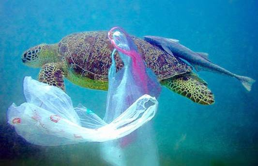
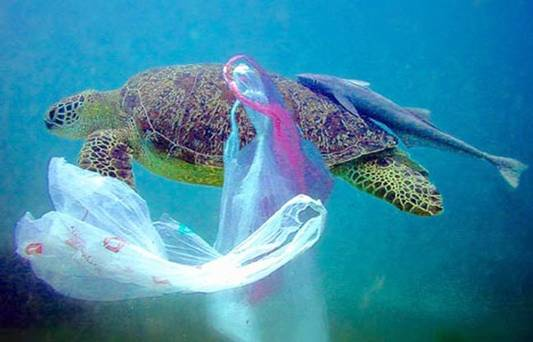
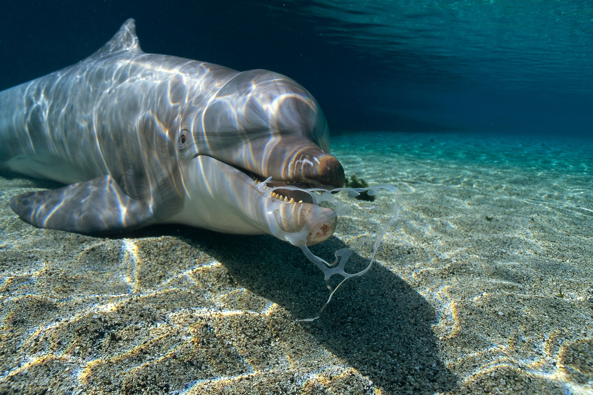
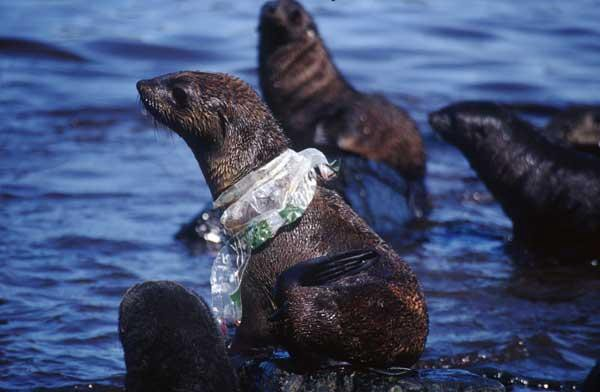
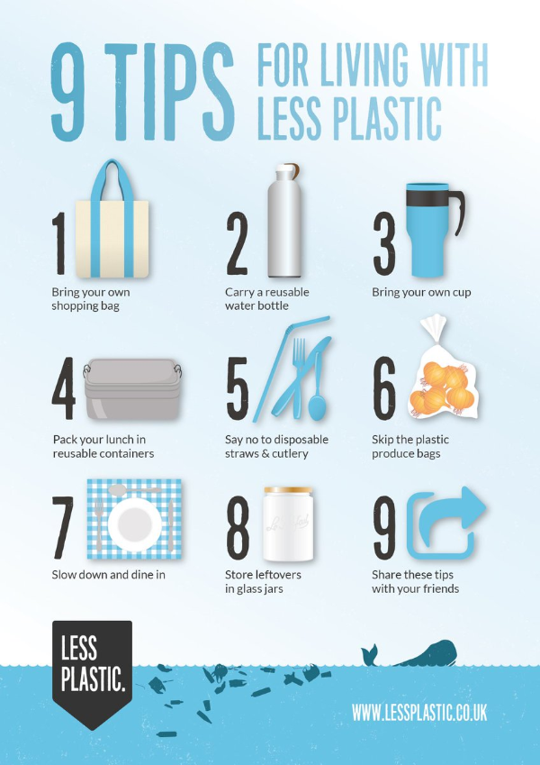

Plastics that exist throughout the oceans tend to endanger marine creatures. For starters, 15-51 trillion pieces of plastics are dumped into the ocean every year. Statistics state that 40 percent of the ocean’s surface is made up of plastic. Whether it
be in the form of big plastic bags, or the size of a pebble, plastics had seemingly taken over major parts of the ocean. The tiny pieces of plastics that exist within ocean life would be ingested by many marine wildlife creatures that
mistaken them as food. The bigger pieces of plastic tend to entangle many ocean creatures, making it hard for them to maneuver. This can eventually lead to the suffocation of these living things. It should be noted that approximately 800
species tend to get affected through this issue. If this were to continue, no species on Earth would remain in existence.
There are so many types of plastics that get mistaken for food everywhere. This often occurs within small plastics that end up in the ocean. As a result, marine animals become full of these plastic products that tend to never break down easily. For instance,
a fish can get tangled up by a ribbon that had ended up in the ocean. The fish may suffocate, in which it would end up dying. Just like the fish, seals and sea lions would have pieces of plastic stuck onto their necks. Consequently, they
would have a hard time doing daily tasks. Scientists have conducted an eight year study in Southeastern Alaska and British Columbia on the sea animals that tend to be in danger. According to their research 388 sea lions were entangled
by plastic.
 



In addition, marine creatures always seem to be in danger of plastics, no matter the size. Even some of the largest sea turtles are tangled up by the massive amounts of plastics that exist within the oceans of the Earth. According to statistics, at least
1,000 turtles die due to the cause of being tangled up by plastic wastes. Even some of the smartest sea animals, like dolphins, mistaken plastic for food. On top of that, since plastic doesn’t technically decompose, they would stay in
the animal’s stomach until they die. The plastic would continue to accumulate in the animal’s stomach until the creature eventually dies of malnutrition. Scientists have concluded that plastic waste kills up to 1 million seabirds every
year. At least sixty percent of the seabird population have consumed some sort of plastic throughout their lifetime. If this trend continues further, ninety nine percent of the seabird population would die by the year 2050. Due to such
destruction of plastics in the ocean, many creatures have a hard time surviving through their days.
Alternatives Towards Saving Marine Life
While it is normal for humans to use many types of plastics on the daily, there are many methods towards reducing that amount and ultimately saving marine life.
1. Eliminate Plastic Straws:
According to statistics, approximately 500 million straws are used by humans every single day. An alternative to this is to use reusable straws like ones made from steel, bamboo, and glass.
2. Say No to Plastic Bags:
According to statistics, one million plastic bags are used everyday and at the same time, 500 billion bags are produced. As an alternative, people can use reusable bags when going shopping. As less and less plastic bags are used, less plastic waste would end up being dumped into the ocean.
3. Bye Bye Plastic Bottles:
Throughout a person’s daily life, an individual tends to carry plastic water bottles. While this may seem convenient to all, it is in fact, harmful when they end up in the wrong places. As an alternative towards plastic water bottles, one can use a stainless steel, glass, or reusable bottle.
4. Avoid Food Products with Excess Packaging:
People everywhere are guilty of buying products that are wrapped with plastics, many of which contain more individually wrapped plastic. One way to change this is by buying the bigger pack of a product. This way, people would use less plastic.
5. Say Adios to Plastic Utensils
Most of the plastic utensils we obtain mainly come from when we order take out from a restaurant. Since we are going home to get food to eat, there is no point in getting these plastic utensils. Through such action, we can help the environment by reducing the amount of plastic that exists within our own daily lives.
